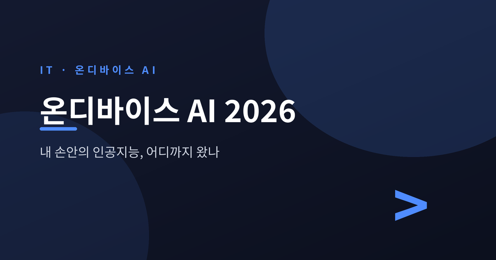
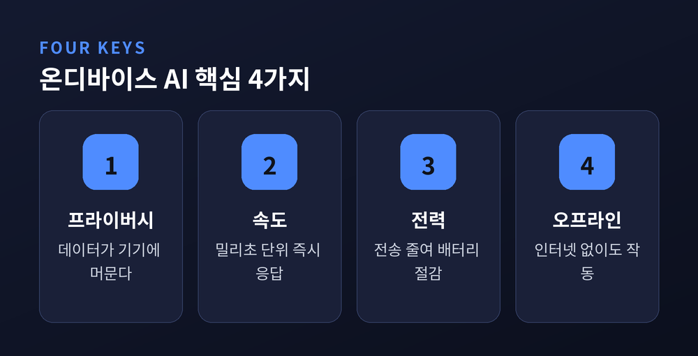
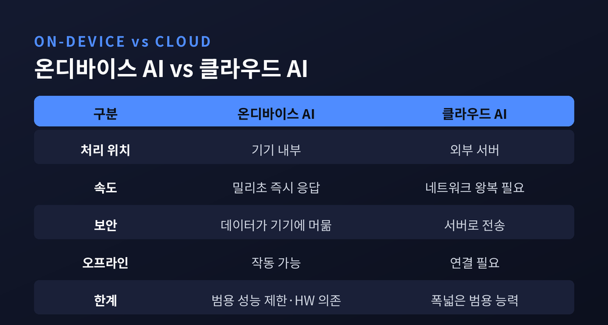
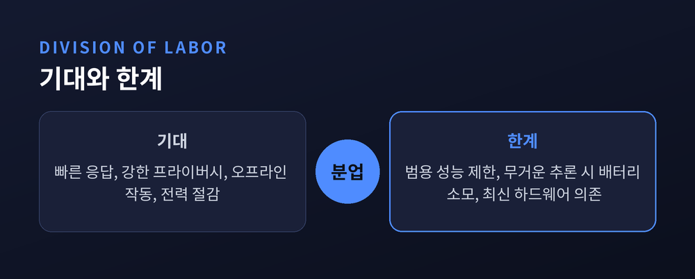

이번 글에서는 2026년의 온디바이스 AI를 정리해 보겠습니다.
클라우드 서버를 거치지 않고 스마트폰과 노트북 안에서 직접 돌아가는 인공지능 이야기입니다.
어디까지 왔고, 무엇이 좋으며, 어디에 한계가 있는지 차분히 살펴보겠습니다.
온디바이스 AI는 데이터를 클라우드로 보내지 않습니다.
스마트폰, 노트북, 웨어러블 같은 기기 안에서 직접 AI 추론을 수행하는 방식입니다.
검색, 자막, 카메라 효과처럼 빠른 동작이 기기의 NPU에서 로컬로 처리됩니다.
그 결과 응답이 빠르고, 배터리 낭비가 적으며, 인터넷 연결에 덜 의존합니다.
2026년의 흐름을 끌어가는 동력은 셋입니다.
AI 탑재 기기의 높은 채택률, NPU의 발전, 그리고 데이터 프라이버시 규제 강화에 대한 대응입니다.
실시간 번역, AI 사진 편집, 건강 모니터링, 오프라인 음성 비서가 대표적인 실사용 사례로 꼽힙니다.

예전엔 AI 연산을 서버에 맡겼습니다.
지금은 기기 안의 NPU가 그 일을 떠맡습니다.
NPU 통합은 사실상 모든 신형 노트북과 데스크톱 CPU 세대에서 표준이 되고 있습니다.
2026년 노트북 NPU 경쟁은 세 갈래입니다.
가장 성숙한 애플 실리콘의 뉴럴 엔진, 80 TOPS 이상을 내세운 퀄컴 스냅드래곤 X2 Elite Gen 2, 그리고 NPU 성능을 끌어올린 인텔 코어 울트라입니다.
퀄컴은 CES 2026에서 스냅드래곤 X2 Elite를 공개했습니다.
헥사곤 NPU 성능을 이전 세대의 45 TOPS에서 80 TOPS로 끌어올렸고, 3나노 공정으로 제조됩니다.
한 주치 이메일을 교차 참조해 제안서를 작성하는 식의 "에이전트형 AI"를 겨냥해 설계됐습니다.
애플은 WWDC 2026에서 Apple Foundation Models 3를 선보였습니다.
온디바이스 모델은 두 종입니다.
그중 가장 강력한 AFM 3 Core Advanced는 200억 파라미터 희소 구조로, 작업에 따라 요청당 10억에서 40억 파라미터만 활성화합니다.
다만 이 모델은 신형 iPhone Pro나 M4 칩 Mac 같은 최신 실리콘이 있어야 돌아갑니다.
구글의 Tensor G5는 TSMC 3나노 공정으로 만든 첫 Tensor 칩입니다.
최신 Gemini Nano를 기기에서 완전히 구동하며, 구글 발표 기준 2.6배 빠르고 2배 더 효율적이라고 합니다.
Pixel 10은 20개가 넘는 온디바이스 생성형 AI 경험을 제공합니다.
삼성도 빠지지 않습니다.
Galaxy S25는 맞춤형 스냅드래곤 8 Elite 칩셋으로 Galaxy AI의 온디바이스 처리 성능을 강화했습니다.
Personal Data Engine이 사용자 데이터를 기기 안에서 분석해 개인화 경험을 만듭니다.
큰 모델만이 답은 아닙니다.
파라미터가 수백만에서 약 70억 범위에 머무는 소형언어모델(SLM)이 온디바이스의 주역으로 떠올랐습니다.
범용 성능을 일부 내려놓는 대신 추론 비용이 낮고, 응답이 빠르며, 프라이버시를 위해 기기 안에서 돌릴 수 있습니다.
마이크로소프트의 Phi-4 Mini는 38억 파라미터로 전용 GPU 없는 노트북에서도 구동됩니다.
구글의 Gemini Nano는 스마트 답장과 온디바이스 요약을 클라우드 없이 처리합니다.
스마트폰의 스마트 답장, 예측 입력, 음성 비서는 모두 이런 작은 모델이 떠받치고 있는 셈입니다.

온디바이스 AI의 장점은 네 가지로 추릴 수 있습니다.
먼저 프라이버시입니다.
데이터가 기기에 머무니 음성 녹음, 얼굴 데이터, 입력 패턴 같은 민감 정보의 노출과 유출 위험이 줄어듭니다.
다음은 지연입니다.
결과가 초가 아니라 밀리초 단위로 도착합니다.
2026년 안드로이드 폰의 온디바이스 추론은 프로덕션 컴퓨터 비전 모델 기준 20밀리초 미만의 지연을 넘어섰습니다.
전력 효율도 무시할 수 없습니다.
네트워크 전송을 피하면 클라우드 방식 대비 배터리 소모를 30~50% 줄일 수 있습니다.
마지막은 오프라인 작동입니다.
인터넷 연결 없이 돌아가니 인프라가 열악한 지역이나 현장 근무자에게 특히 쓸모가 큽니다.
물론 아직 완벽하지는 않습니다.
온디바이스 모델은 특정 작업은 잘 처리하지만, GPT-4나 Claude Sonnet 같은 클라우드 모델의 폭넓은 범용 능력에는 미치지 못합니다.
배터리도 양면적입니다.
가벼운 일상 작업은 전송을 줄여 아껴 주지만, 무거운 로컬 추론을 집중적으로 돌리면 2시간 안에 배터리의 30~50%를 소모하기도 합니다.
하드웨어 의존도 분명합니다.
20억 단위를 넘는 온디바이스 모델은 최신 고성능 실리콘이 있어야 제 성능을 냅니다.
구형 기기는 최신 기능을 온전히 누리기 어렵습니다.
그래서 애플과 삼성 모두 민감하지 않거나 더 복잡한 작업은 클라우드와 결합하는 하이브리드 구조를 택하고 있습니다.

스마트폰은 2026년 온디바이스 AI 시장에서 47.2%로 가장 큰 비중을 차지할 것으로 추정됩니다.
아시아·태평양은 35.6% 비중으로 가장 빠르게 성장하는 지역으로 전망됩니다.
엣지 AI 전체 시장 규모는 기관별로 편차가 큽니다.
2030년 전망만 해도 568억 달러에서 1,000억 달러를 웃도는 수치까지 갈립니다.
기준 연도와 정의, 범위가 기관마다 다른 탓이니 숫자 하나에 너무 무게를 둘 필요는 없습니다.
다만 방향은 한곳을 가리킵니다.
실시간 데이터 처리 수요, IoT와 산업용 로봇의 확산, AI 기술의 발전이 흐름을 밀고 있습니다.
정리하면 이렇습니다.
온디바이스 AI는 더 이상 먼 이야기가 아닙니다.
내 손안의 기기가 이미 작은 인공지능을 품고 있고, 그 품은 해마다 넓어지고 있습니다.
다만 그것이 클라우드를 완전히 대체하지는 않습니다.
빠르고 사적인 일은 기기가, 무겁고 폭넓은 일은 클라우드가 — 둘은 경쟁이 아니라 분업으로 가고 있습니다.
"가장 똑똑한 AI보다, 내 곁에서 조용히 돌아가는 AI."
앞으로의 인공지능을 가늠해 보고 싶으시다면, 멀리 있는 데이터센터가 아니라 지금 손에 쥔 기기부터 들여다보시길 권합니다.